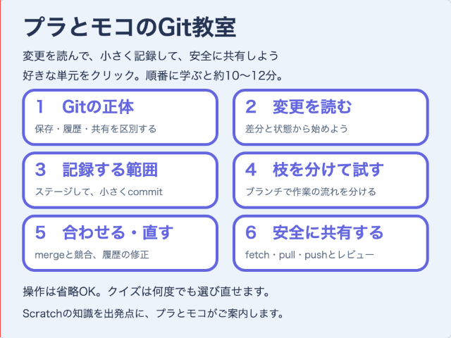

プラとモコのエディター教室
プラとモコのGit教室
Scratch作品の変更を読み、必要なものだけ履歴に残して、仲間と共有する流れを学びます。
紙芝居で試す
約10〜12分。どの単元からでも始められます。解説、クイズ、答えの順に進みます。
- Plus Editorで「ファイル」→「SB3ファイルを開く…」を選びます。
- 実行画面を引出しに表示して緑の旗を押し、単元を選びます。▼が点滅したらステージをクリックすると、文章やセリフが一つずつ進みます。Spaceでも進めます。

紙芝居の練習では星の間隔を変えて、変更前と後を考えます。実際にGitの操作を試す場合は、説明の手順に沿って空の練習フォルダーを使います。手元の確認にはGitHub接続は不要です。
1. Gitの正体
有効な保存形式で書き出してから、Gitで意味のある時点をコミットします。共有先へのpushは、手元で記録されたコミットを送る操作です。
- 保存・commit・pushは別の操作
- 履歴は、記録した状態と意図を残す
- 未記録の作業や素材の扱いも確認する
試すこと 作品の速度を変えた場面で、保存しただけ、コミットした後、pushした後にそれぞれ何が残るか説明します。
2. 変更を読む
状態は変更のあるファイルや領域を示します。差分は具体的にどの行やブロックが変わったかを示します。SB3の中身を作品フォルダとして展開して扱う環境では、ブロック差分を読めます。
- 状態と差分で、何が変わったか確認
- 無関係な変更を混ぜない
- 差分レビューと動作確認を組み合わせる
試すこと 間隔が60から70に変わった場合に、ファイル名だけを見た状態と変更の意図まで読めた状態の違いを考えます。
3. 記録する範囲
作業中の変更から、次に記録する内容をステージします。ゲームのルールと説明の誤字修正を分けて記録すれば、後から差分を読んで理由を追えます。
- 次のcommitへ入れる内容を選ぶ
- ステージ側の差分を確認する
- 一つの目的と、その理由を記録する
試すこと 二つの変更があるとき、得点ルールのコミットに入れる変更を一つ選びます。コマンドの練習では git diff --staged で記録する差分を確かめます。
4. 枝を分けて試す
ブランチはコミットを指す名前です。動作する版を保ちながら試作を進めるために、作業用のブランチを切れます。切り替える前に現在のブランチと変更の状態を見ます。
- 共通の履歴から、作業の流れを分ける
- 今いるブランチを確認する
- 未コミットの変更を把握して切り替える
試すこと 「星を出す間隔を変える」試作のブランチを作る想定で、作成前に記録しておきたい状態を決めます。
5. 合わせる・直す
merge後は、競合の有無にかかわらず、残った変更と作品の動作を確かめます。共有した変更を取り消す場合は、取り消しのコミットを新しく残す revert が候補になります。
- 自動mergeでも、統合結果を確認する
- 競合は意図を読んで解消する
- 共有済み履歴の修正方法を慎重に選ぶ
試すこと 一人が間隔を変え、もう一人が個数を変えたとき、両方を残した後に何を確認するか考えます。同じ値を変えた場合は二人の意図を比べます。
6. 安全に共有する
fetchで相手の履歴を取得し、pullで取り込み、pushで自分の変更を送ります。送信先とブランチ、差分、公開範囲を確認し、共有後はレビューを使って変更を見てもらいます。
- fetch・pull・pushの役割を区別する
- 送信先と枝、差分を確認して共有
- 秘密を履歴へ入れない
試すこと 仲間の変更を知りたいだけの場面、取り込みたい場面、自分の変更を送りたい場面に、それぞれどの操作を選ぶか答えます。